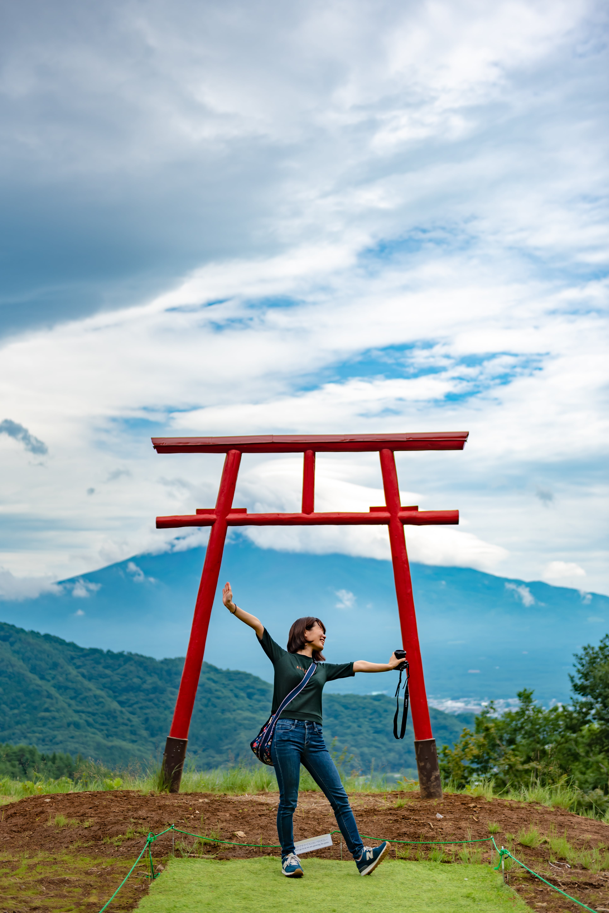
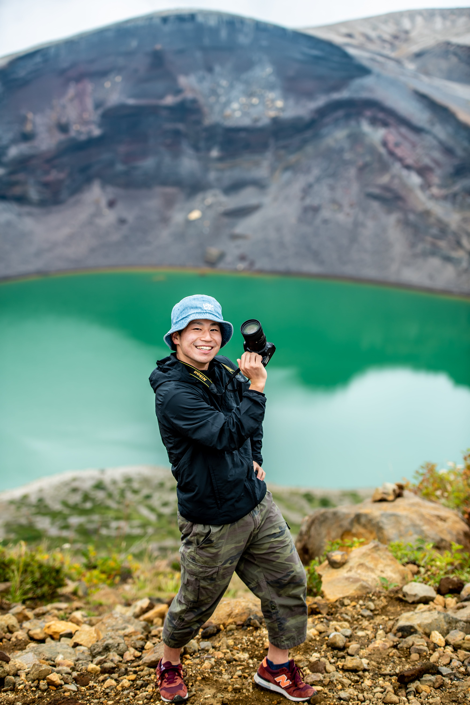
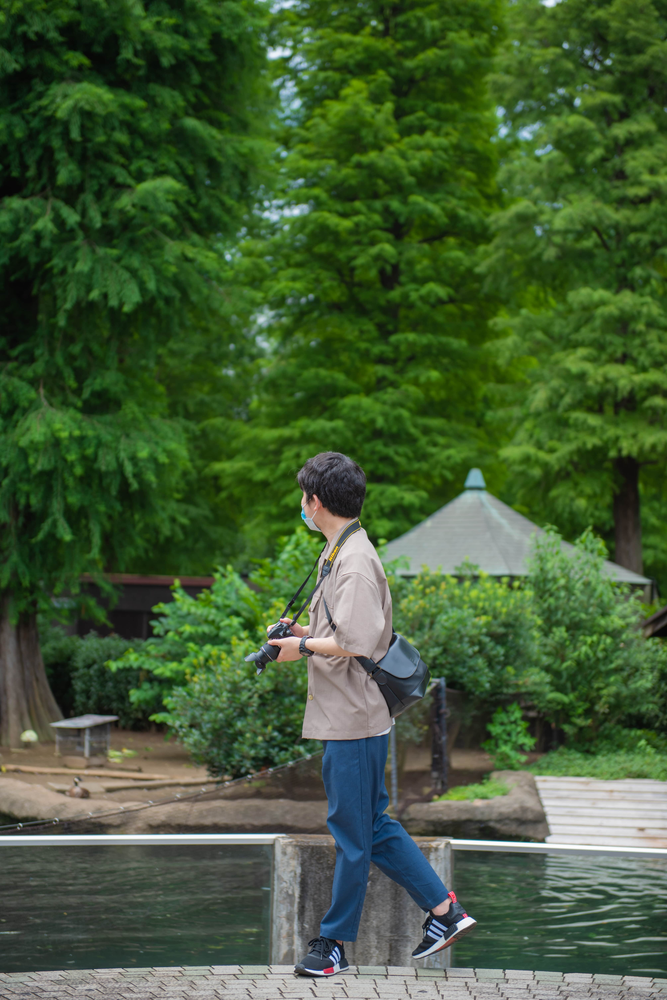
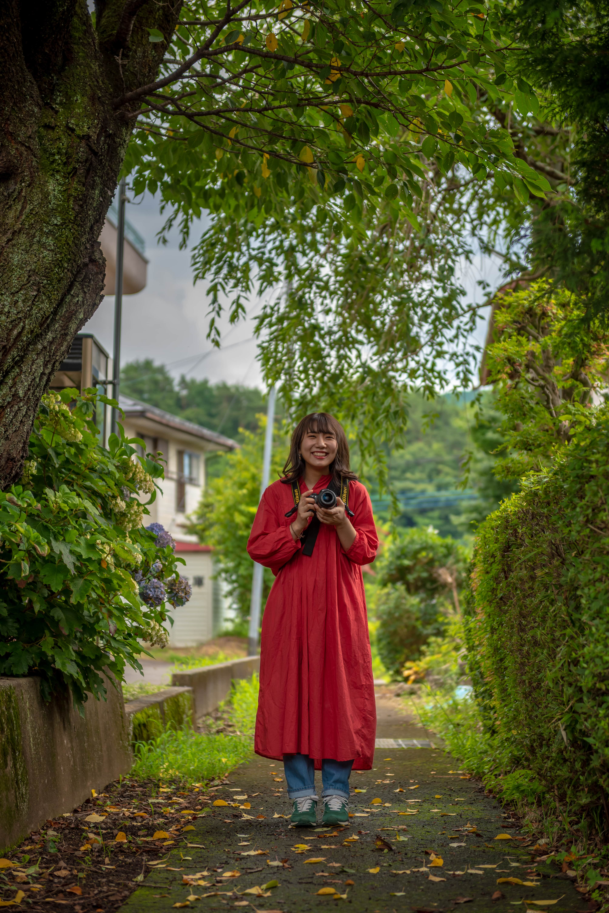

代表
えいちゃん

出身地
佐賀県
写真歴
大学院1年目～現在(3年目)
好きな写真撮影スタイル
撮りたいと思ったものをじっくり撮影することが好きです。
最近は星空撮影にはまっています。
一言
写真を撮ることも一緒に撮影することも好きなので、
写真に関して何でも相談いただきたいです。
一緒に良い写真を撮りましょう！
SNS
副代表
ぴーや
出身地
岐阜県
写真歴
大学〇年目～現在(〇年目)
好きな写真撮影スタイル
XXXXXXXXXXXX
XXXXXXXXXXX
一言
XXXXXXXXXXX
XXXXXXXXXXXXX
XXXXXXXXXXXXX
SNS
副代表
おのり
出身地
福岡県
写真歴
社会人1年目～現在(1年目)
好きな写真撮影スタイル
人と一緒に撮影しに行くことが好きです。
その人の写真から自分と違った視点が見えるときに面白さを感じます。
一言
まだまだ初心者カメラマンですが、
いろんな場所へ一緒に撮影しに行きましょう！
SNS
メンバー
ゆだちゃん
出身地
鹿児島県
写真歴
社会人1年目～現在(1年目)
好きな写真撮影スタイル
自然も人工物も撮るのが楽しいです。
何より誰かとお出かけしながら写真撮れることが最高に楽しい！！
一言
撮り方も機材もまだまだ初心者です。
成長しながら楽しめたらいいなと思いますので、いろんな場所に行きたいです！
SNS
メンバー
かのこ
出身地
長崎県
写真歴
社会人1年目～現在(1年目)
好きな写真撮影スタイル
誰かと素敵な景色を共有したいです。
一言
超初心者ですが、ぜひご一緒しましょう！